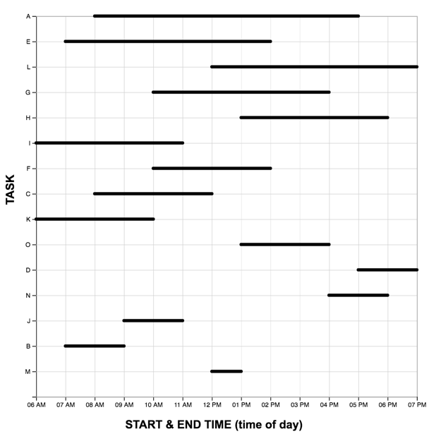
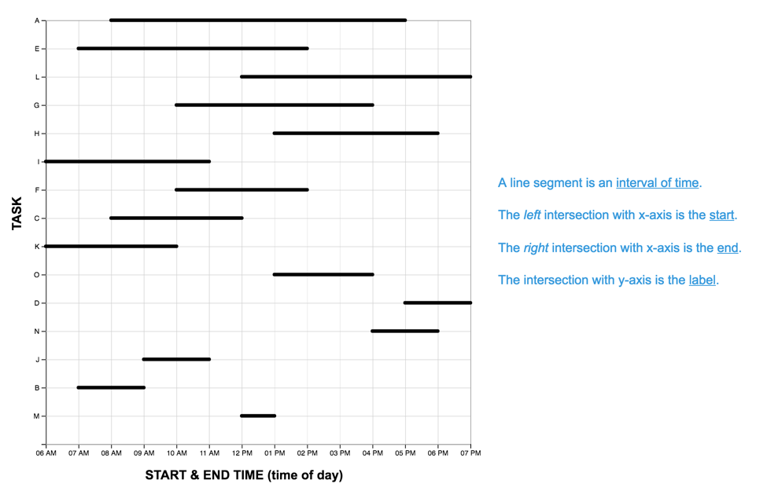
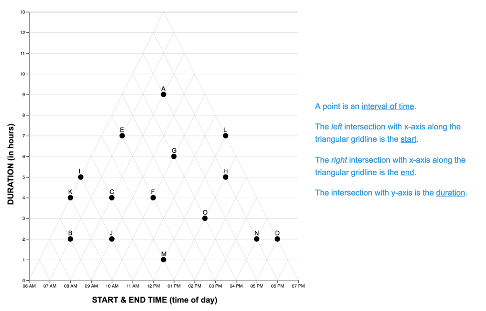

In Study Two we examine if scaffolding is effective in aiding untrained students to understand the Triangular Model (TM) graph. We know that students are unlikely to construct the correct interpretation of the TM without assistance. Guided by the results of the Study One Design Task, we created four scaffolds. We test the effectiveness of these scaffolds by seeking to replicate the Qiang et.al (2014) finding that after 20 minutes of video training, students perform faster and more accurately with the unconventional TM than the conventional Linear Model (LM). Will our participants show similar performance on the TM with scaffolds rather than formal instruction? Further, will engagement with the TM in a reading task be sufficient for students to reproduce the graph in a subsequent drawing task?
To try the study yourself:http://morning-gorge-17056.herokuapp.com/ Enter “github” as your session code, and number of the condition you wish to test
0 = control (no-scaffold), 1 = “what-text”, 2 = “how-text”, 3 = “static-image”, 4 = “interactive-image”
Condition
Linear Graph
Triangular Graph
no scaffold (control)

text—“what”
describes the meaning of each mark in the system


text—“how”
describes the procedure for a first order reading of a data point
img—static
shows a single ‘worked example’ for one data point
img—interactive
displays intersections of the coordinate system on mouse hover
CODE
library(codebook) #data dictionarylibrary(kableExtra) #tableslibrary(Hmisc) #%nin% operatorlibrary(tidyverse) #ALL THE THINGS#set some output optionslibrary(dplyr, warn.conflicts =FALSE)options(dplyr.summarise.inform =FALSE)options(scipen=1, digits=3)
CODE
# HACK WD FOR LOCAL RUNNING?# imac = "/Users/amyraefox/Code/SGC-Scaffolding_Graph_Comprehension/SGC-X/ANALYSIS/MAIN"# mbp = "/Users/amyfox/Sites/RESEARCH/SGC—Scaffolding Graph Comprehension/SGC-X/ANALYSIS/MAIN"# setwd(mbp)#IMPORT DATA df_subjects <-read_csv("analysis/SGC2/data/1-study-level/sgc2_all_participants.csv") %>%mutate(order =as.factor(experiment),order =recode_factor(order, "experiment"="LM-First" , "reverse"="TM-First" ),condition =as.factor(condition),pretty_condition =recode_factor(condition, "0"="control","1"="text:what","2"="text:how", "3"="img:static", "4"="img:ixv"),lm_scenarios =as.factor(lm_scenarios),tm_scenarios =as.factor(tm_scenarios), study ="SGC2",draw_type =as.factor(`Graph Type`))#note: for some reason there are records for two subjects included in the item-level data that are NOT in the subject level data. Not sure whay this is; could be that these were test subjects. Decision is to remove them from the item level file c("S0MEG", "7UDVY"))df_items <-read_csv("analysis/SGC2/data/1-study-level/sgc2_all_items.csv") %>%mutate(score =as.factor(correct),order =as.factor(experiment),order =recode_factor(order, "experiment"="LM-First" , "reverse"="TM-First" ),condition =as.factor(condition),graph =as.factor(graph),pretty_condition =recode_factor(condition, "0"="control","1"="text:what","2"="text:how", "3"="img:static", "4"="img:ixv"),scenario =as.factor(scenario),q =as.factor(q_order), study ="SGC2",question =as.factor(question),block =as.factor(block)) %>% dplyr::select(-`_id`,q_order) %>%filter(subject %nin%c("S0MEG", "7UDVY"))#verify complete set of items for subjects # n_items = 30+2 #15qs per block + 2 drawing# nrow(df_subjects) * n_items == nrow(df_items)
CODE
title ="Participants by Condition and (counterbalanced) Task-order"cols =c("Control","Text[what]","Text[how]","Image[static]", "Image[ixv]","Total")cont <-table(df_subjects$order, df_subjects$pretty_condition)cont %>%addmargins() %>%kbl(caption = title, col.names = cols) %>%kable_classic()
Participants by Condition and (counterbalanced) Task-order
Control
Text[what]
Text[how]
Image[static]
Image[ixv]
Total
LM-First
29
31
30
30
34
154
TM-First
32
28
36
32
34
162
Sum
61
59
66
62
68
316
Hypotheses
Learners without scaffolding (control) will perform better with the LM than TM
Learners with (any form of) scaffolding will perform better with the TM than LM (replication of [12]).
Based on observations in Study One we expect that graph-order will act as a scaffold. Learners who solve problems with the LM graph first will perform better on the TM (relative to TM-first learners) as their attention will be drawn to the salient differences between the graphs.
METHODS
Design
We employed a 5 (scaffold: none-control, what-text, how-text, static image, interactive image) x 2 (graph: LM, TM) mixed design, with scaffold as a between-subjects variable and graph as a within-subject variable. To test our hypothesis that exposure to the conventional LM acts as a scaffold for the TM, we counterbalanced the order of graph-reading tasks (order: LM-first, TM-first). For each task we measured response accuracy and time. For the follow-up graph-drawing task, a team of raters coded the type of graph produced by each participant.
Materials
Scaffolds
For the first five questions of each graph-reading task, participants saw their assigned scaffold along with the designated graph. On the following ten questions, the scaffold was not present. Examples of each scaffold-condition for the TM and LM graphs are shown in the table above.
The Graph Drawing Task
In the graph drawing task participants were given a sheet of isometric dot paper and a table containing a set of 10 time intervals. Isometric dot paper equally supports the construction of lines at 0, 45 and 90 degrees, thus minimizing any biasing effects of the paper on the type of graph the participants chose to draw. Participants were directed to draw a triangular graph of the data (“like the triangle graph you saw in the previous task”), using the pencil, eraser and ruler provided.
Procedure
Participants completed the study individually in a computer lab. Each participant was randomly assigned to one of five conditions which determined what additional information (scaffold) they received while solving the first five problems with each graph: no-scaffold (control), ‘what’ text, ‘how’-text, static-image, and interactive-image. After a short introduction they continued to the first of two graph reading tasks (graph order counterbalanced). After completing the first graph reading task, they were introduced to the second scenario, and completed the second graph reading task with the remaining graph. Finally, participants completed the graph drawing task. They finished the study by completing a short demographic survey, and reading the debriefing text. The runtime of the entire study ranged from 20 to 60 minutes.
Sample
Data was collected by convenience sample of a university subject pool. Data were collected in the Spring of 2017 with, in-person, with large groups of students simultaneously completing the study (independently) in a computer lab.
ANALYSIS
note: Unlike studies SGC3 and onwards, scoring for SGC2 is already included in the raw data files.
CODE
# HACK WD FOR LOCAL RUNNING?# imac = "/Users/amyraefox/Code/SGC-Scaffolding_Graph_Comprehension/SGC-X/ANALYSIS/MAIN"# mbp = "/Users/amyfox/Sites/RESEARCH/SGC—Scaffolding Graph Comprehension/SGC-X/ANALYSIS/MAIN"# setwd(mbp)#SAVE FILESwrite.csv(df_subjects,"analysis/SGC2/data/2-scored-data/sgc2_participants.csv", row.names =FALSE)write.csv(df_items,"analysis/SGC2/data/2-scored-data/sgc2_items.csv", row.names =FALSE)#SAVE R Data Structures rio::export(df_subjects, "analysis/SGC2/data/2-scored-data/sgc2_participants.rds") # to R data structure filerio::export(df_items, "analysis/SGC2/data/2-scored-data/sgc2_items.rds") # to R data structure file
---# title: 'Introduction' subtitle: 'Study SGC2 | Introduction'---\newpage# Introduction {#sec-SGC2-introduction}In Study Two we examine if scaffolding is effective in aiding untrained students to understand the Triangular Model (TM) graph. We know that students are unlikely to construct the correct interpretation of the TM without assistance. Guided by the results of the Study One Design Task, we created four scaffolds. We test the effectiveness of these scaffolds by seeking to replicate the Qiang et.al (2014) finding that after 20 minutes of video training, students perform faster and more accurately with the unconventional TM than the conventional Linear Model (LM). Will our participants show similar performance on the TM with scaffolds rather than formal instruction? Further, will engagement with the TM in a reading task be sufficient for students to reproduce the graph in a subsequent drawing task?**To try the study yourself:** <http://morning-gorge-17056.herokuapp.com>/\*Enter "github" as your session code, and number of the condition you wish to test*\0 = control (no-scaffold), 1 = "what-text", 2 = "how-text", 3 = "static-image", 4 = "interactive-image"\+---------------------------------------------------------------------+------------------------------+------------------------------+| Condition | Linear Graph | Triangular Graph |+=====================================================================+==============================+==============================+| no scaffold (control) |  |  |+---------------------------------------------------------------------+------------------------------+------------------------------+| text---"what"\ |  |  || describes *the meaning of each mark in the system* | | |+---------------------------------------------------------------------+------------------------------+------------------------------+| text---"how"\ |  |  || describes *the procedure for a first order reading of a data point* | | |+---------------------------------------------------------------------+------------------------------+------------------------------+| img---static\ |  |  || shows a single 'worked example' for one data point | | |+---------------------------------------------------------------------+------------------------------+------------------------------+| img---interactive\ |  |  || displays intersections of the coordinate system on mouse hover | | |+---------------------------------------------------------------------+------------------------------+------------------------------+```{r}#| label: SETUP#| warning: false#| message : falselibrary(codebook) #data dictionarylibrary(kableExtra) #tableslibrary(Hmisc) #%nin% operatorlibrary(tidyverse) #ALL THE THINGS#set some output optionslibrary(dplyr, warn.conflicts =FALSE)options(dplyr.summarise.inform =FALSE)options(scipen=1, digits=3)``````{r}#| label: IMPORT-DATA#| warning : false#| message : false# HACK WD FOR LOCAL RUNNING?# imac = "/Users/amyraefox/Code/SGC-Scaffolding_Graph_Comprehension/SGC-X/ANALYSIS/MAIN"# mbp = "/Users/amyfox/Sites/RESEARCH/SGC—Scaffolding Graph Comprehension/SGC-X/ANALYSIS/MAIN"# setwd(mbp)#IMPORT DATA df_subjects <-read_csv("analysis/SGC2/data/1-study-level/sgc2_all_participants.csv") %>%mutate(order =as.factor(experiment),order =recode_factor(order, "experiment"="LM-First" , "reverse"="TM-First" ),condition =as.factor(condition),pretty_condition =recode_factor(condition, "0"="control","1"="text:what","2"="text:how", "3"="img:static", "4"="img:ixv"),lm_scenarios =as.factor(lm_scenarios),tm_scenarios =as.factor(tm_scenarios), study ="SGC2",draw_type =as.factor(`Graph Type`))#note: for some reason there are records for two subjects included in the item-level data that are NOT in the subject level data. Not sure whay this is; could be that these were test subjects. Decision is to remove them from the item level file c("S0MEG", "7UDVY"))df_items <-read_csv("analysis/SGC2/data/1-study-level/sgc2_all_items.csv") %>%mutate(score =as.factor(correct),order =as.factor(experiment),order =recode_factor(order, "experiment"="LM-First" , "reverse"="TM-First" ),condition =as.factor(condition),graph =as.factor(graph),pretty_condition =recode_factor(condition, "0"="control","1"="text:what","2"="text:how", "3"="img:static", "4"="img:ixv"),scenario =as.factor(scenario),q =as.factor(q_order), study ="SGC2",question =as.factor(question),block =as.factor(block)) %>% dplyr::select(-`_id`,q_order) %>%filter(subject %nin%c("S0MEG", "7UDVY"))#verify complete set of items for subjects # n_items = 30+2 #15qs per block + 2 drawing# nrow(df_subjects) * n_items == nrow(df_items)``````{r}#| label : INSPECT-DATA-COLLECTIONtitle ="Participants by Condition and (counterbalanced) Task-order"cols =c("Control","Text[what]","Text[how]","Image[static]", "Image[ixv]","Total")cont <-table(df_subjects$order, df_subjects$pretty_condition)cont %>%addmargins() %>%kbl(caption = title, col.names = cols) %>%kable_classic()```### Hypotheses1. Learners without scaffolding (control) will perform better with the LM than TM\2. Learners with (any form of) scaffolding will perform better with the TM than LM (replication of \[12\]).\3. Based on observations in Study One we expect that graph-order will act as a scaffold. Learners who solve problems with the LM graph first will perform better on the TM (relative to TM-first learners) as their attention will be drawn to the salient differences between the graphs.\<br>## METHODS### DesignWe employed a 5 (scaffold: none-control, what-text, how-text, static image, interactive image) x 2 (graph: LM, TM) mixed design, with scaffold as a between-subjects variable and graph as a within-subject variable. To test our hypothesis that exposure to the conventional LM acts as a scaffold for the TM, we counterbalanced the order of graph-reading tasks (order: LM-first, TM-first). For each task we measured response accuracy and time. For the follow-up graph-drawing task, a team of raters coded the type of graph produced by each participant.\<br>### Materials#### ScaffoldsFor the first five questions of each graph-reading task, participants saw their assigned scaffold along with the designated graph. On the following ten questions, the scaffold was not present. Examples of each scaffold-condition for the TM and LM graphs are shown in the table above.#### The Graph Drawing TaskIn the <!--html_preserve--><ahref="static/stimuli/drawing_task.pdf"> graph drawing task</a><!--/html_preserve--> participants were given a sheet of isometric dot paper and a table containing a set of 10 time intervals. Isometric dot paper equally supports the construction of lines at 0, 45 and 90 degrees, thus minimizing any biasing effects of the paper on the type of graph the participants chose to draw. Participants were directed to draw a triangular graph of the data ("like the triangle graph you saw in the previous task"), using the pencil, eraser and ruler provided.<!--html_preserve--><br><br><!--/html_preserve-->### ProcedureParticipants completed the study individually in a computer lab. Each participant was randomly assigned to one of five conditions which determined what additional information (scaffold) they received while solving the first five problems with each graph: no-scaffold (control), 'what' text, 'how'-text, static-image, and interactive-image. After a short introduction they continued to the first of two graph reading tasks (graph order counterbalanced). After completing the first graph reading task, they were introduced to the second scenario, and completed the second graph reading task with the remaining graph. Finally, participants completed the graph drawing task. They finished the study by completing a short demographic survey, and reading the debriefing text. The runtime of the entire study ranged from 20 to 60 minutes.### SampleData was collected by convenience sample of a university subject pool. Data were collected in the Spring of 2017 with, in-person, with large groups of students simultaneously completing the study (independently) in a computer lab.## ANALYSIS_note_: Unlike studies SGC3 and onwards, scoring for SGC2 is already included in the raw data files. ```{r}#| label: EXPORT-FILES# HACK WD FOR LOCAL RUNNING?# imac = "/Users/amyraefox/Code/SGC-Scaffolding_Graph_Comprehension/SGC-X/ANALYSIS/MAIN"# mbp = "/Users/amyfox/Sites/RESEARCH/SGC—Scaffolding Graph Comprehension/SGC-X/ANALYSIS/MAIN"# setwd(mbp)#SAVE FILESwrite.csv(df_subjects,"analysis/SGC2/data/2-scored-data/sgc2_participants.csv", row.names =FALSE)write.csv(df_items,"analysis/SGC2/data/2-scored-data/sgc2_items.csv", row.names =FALSE)#SAVE R Data Structures rio::export(df_subjects, "analysis/SGC2/data/2-scored-data/sgc2_participants.rds") # to R data structure filerio::export(df_items, "analysis/SGC2/data/2-scored-data/sgc2_items.rds") # to R data structure file```## RESOURCES```{r}#| label: SESSIONsessionInfo()```